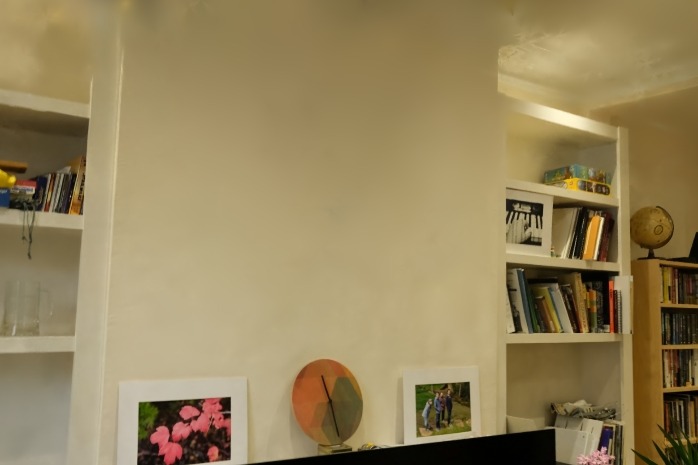
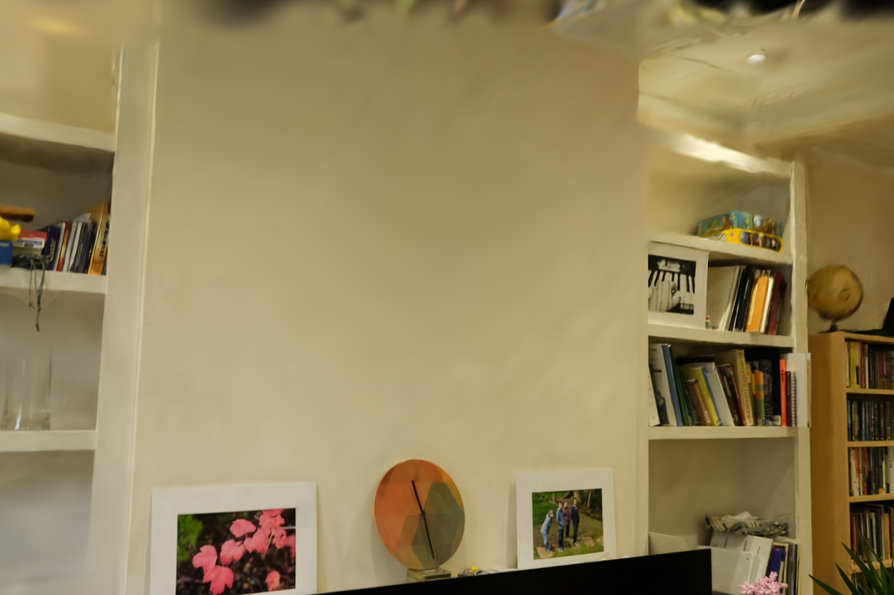
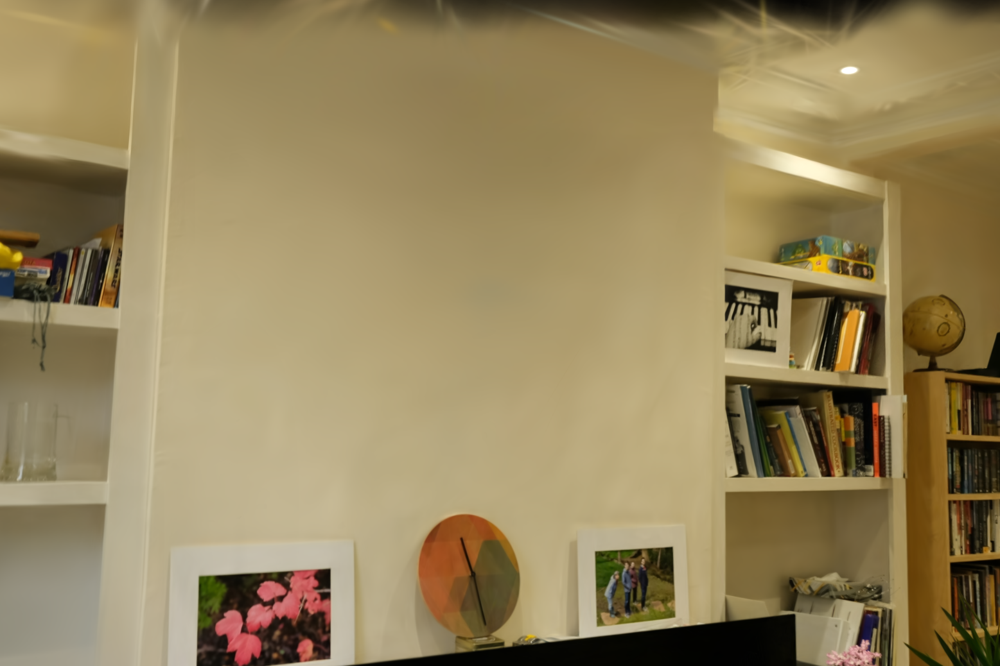
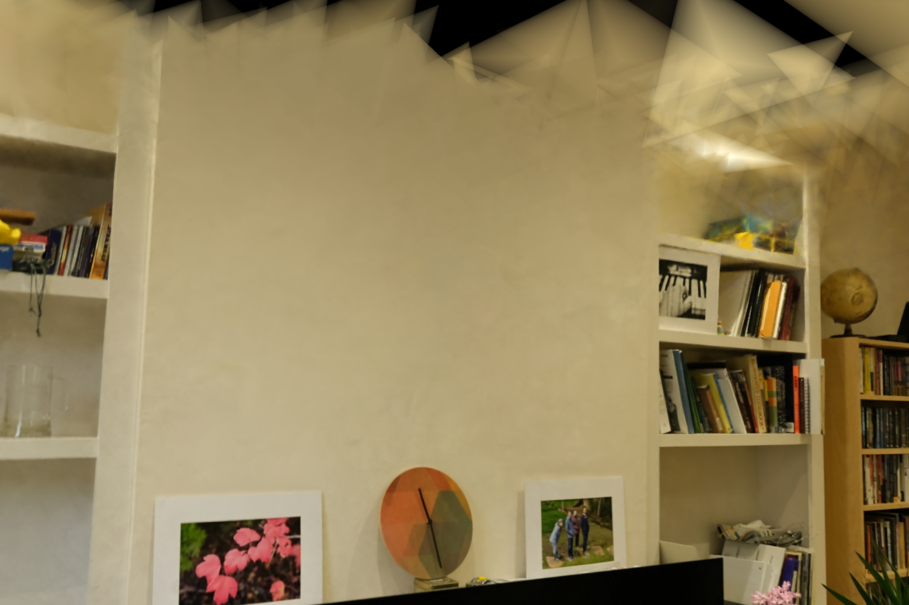
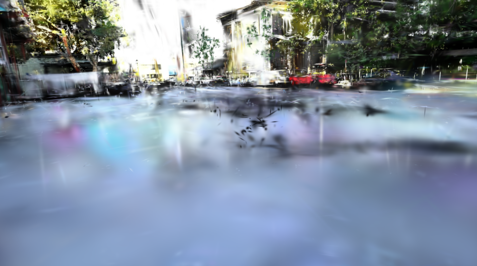
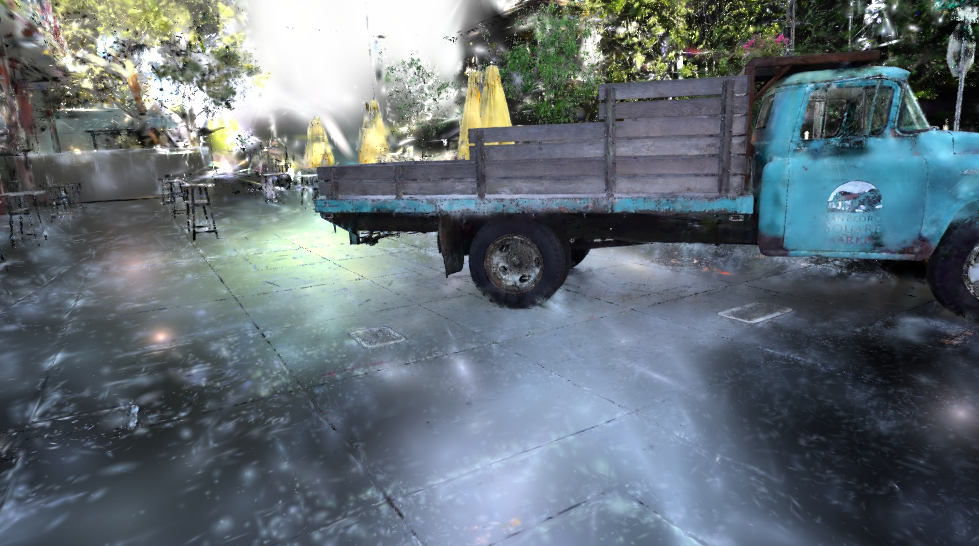
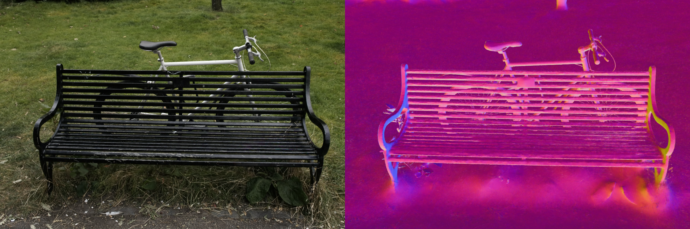
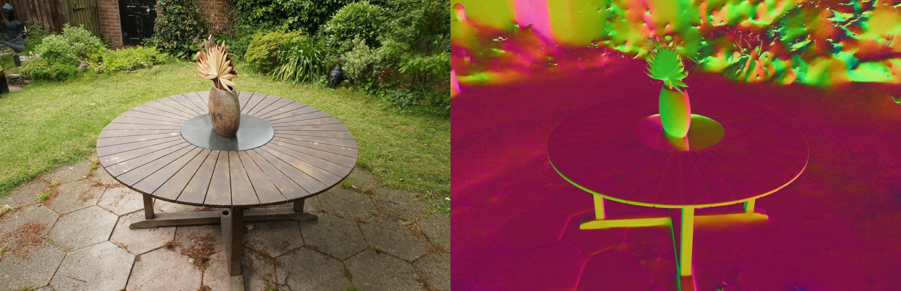
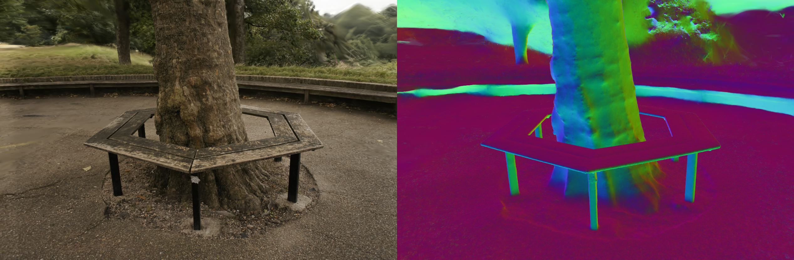
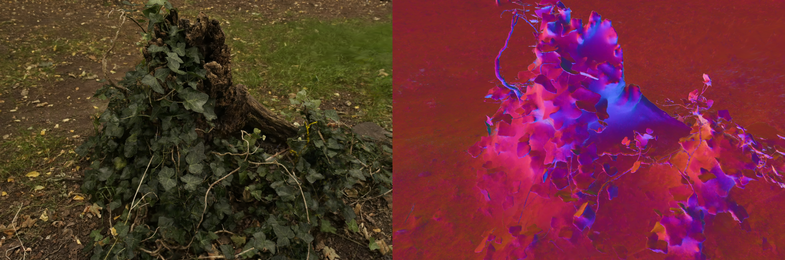

Ours

2DGS

3DGS

Tri. Splat.

Novel view synthesis has recently been revolutionized by 3D Gaussian Splatting (3DGS), which enables real-time rendering through explicit primitive rasterization. However, existing methods tie visual fidelity strictly to the number of primitives: quality downscaling is achieved only through pruning primitives. We propose the first inherently scalable primitive for radiance field rendering. Fourier Splatting employs scalable primitives with arbitrary closed shapes obtained by parameterizing planar surfels with Fourier encoded descriptors. This formulation allows a single trained model to be rendered at varying levels of detail simply by truncating Fourier coefficients at runtime. To facilitate stable optimization, we employ a straight-through estimator for gradient extension beyond the primitive boundary, and introduce HYDRA, a densification strategy that decomposes complex primitives into simpler constituents within the MCMC framework. Our method achieves state-of-the-art rendering quality among planar-primitive frameworks and comparable perceptual metrics compared to leading volumetric representations on standard benchmarks, providing a versatile solution for bandwidth-constrained high-fidelity rendering.
Starting from a circle ($K\!=\!1$), each additional frequency component progressively deforms the boundary into complex shapes.
A learned MLP detects lobes in the parent boundary, then predicts child primitives that together reconstruct the original shape.
Drag the dividers to compare all four methods simultaneously.




Close-up comparisons on Tanks & Temples and Mip-NeRF 360 scenes.

Among planar primitives: best, second best.
| Method | Outdoor Mip-NeRF 360 | Indoor Mip-NeRF 360 | Average Mip-NeRF 360 | Tanks & Temples | ||||||||
|---|---|---|---|---|---|---|---|---|---|---|---|---|
| PSNR↑ | SSIM↑ | LPIPS↓ | PSNR↑ | SSIM↑ | LPIPS↓ | PSNR↑ | SSIM↑ | LPIPS↓ | PSNR↑ | SSIM↑ | LPIPS↓ | |
| Volumetric methods | ||||||||||||
| 3DGS | 24.64 | 0.731 | 0.234 | 30.41 | 0.920 | 0.189 | 26.98 | 0.813 | 0.214 | 23.14 | 0.841 | 0.183 |
| 3DGS-MCMC | 25.51 | 0.760 | 0.210 | 31.08 | 0.917 | 0.208 | 27.84 | 0.850 | 0.210 | 24.29 | 0.860 | 0.190 |
| Planar methods | ||||||||||||
| 2DGS | 24.34 | 0.717 | 0.246 | 30.40 | 0.916 | 0.195 | 26.84 | 0.804 | 0.252 | 23.13 | 0.831 | 0.212 |
| BBSplat | 23.55 | 0.669 | 0.281 | 30.62 | 0.921 | 0.178 | 26.49 | 0.778 | 0.236 | 25.12 | 0.868 | 0.172 |
| Tri. Splat. | 24.27 | 0.722 | 0.217 | 30.80 | 0.928 | 0.160 | 26.98 | 0.812 | 0.191 | 23.14 | 0.857 | 0.143 |
| Ours | 24.62 | 0.739 | 0.217 | 31.44 | 0.930 | 0.162 | 27.65 | 0.824 | 0.193 | 24.15 | 0.868 | 0.137 |
A single trained model rendered at varying levels of detail by truncating Fourier coefficients at runtime vs. Octree-GS pruning levels.
Octree-GS

Fourier Splatting (Ours)

Interact with the reconstructed meshes. Drag to rotate, scroll to zoom.
Scan 24
Scan 37
Scan 69
Scan 97
Qualitative surface alignment on outdoor Mip-NeRF 360 scenes.

Bicycle

Garden

Treehill

Stump
@article{jurca2026fourier,
title={Fourier Splatting: Generalized Fourier encoded primitives for scalable radiance fields},
author={Jurca, Mihnea-Bogdan and Munteanu, Adrian and others},
journal={arXiv preprint arXiv:2603.19834},
year={2026}
}Visitor statistics